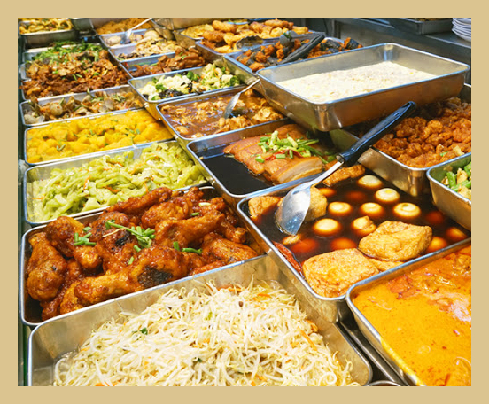

SINGAPORE ECONOMIC
MIXED RICE
OUR HISTORY
Economy rice is thought of as a predominantly Chinese food - it is roughly analogous to the Malay or Indonesian concept of nasi padang or nasi campur (mixed rice). It is what most Chinese Singaporeans and Malaysians think of when they refer to 'home-cooked food' as it is similar to what would be eaten at home, with rice forming the basis of their meal and accompanied by various cooked dishes. Economy rice stalls evolved as a way for the general public to obtain a quick, and most importantly, cheap meal option outside of home.
Established in 2010, EatWhat is one of Singapore's most famous economic mixed rice stall. Over the years, EatWhat has evolved with the country’s growth and identity, representing the palette of flavours that reflect Singapore’s cultural diversity.
